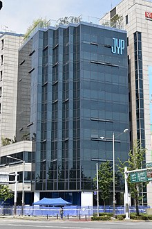

JYPE Corporation |
|
|  | |
| Native name | JYP 엔터테인먼트 |
| Headquarters | Gangdong, Seoul, South Korea |
| Industry | Entertainment, retail |
| Genre | K-pop, R&B, EDM, Trot |
| Founded | April 25, 1997 |
| Founder | J. Y. Park |
Official links |
|
| JYPE page | |
JYP Entertainment Corporation (Korean: JYP 엔터테인먼트) is a South Korean multinational entertainment and record label conglomerate founded in 1997 by J. Y. Park. It is one of the largest entertainment companies in South Korea, and operates as a record label, talent agency, music production company, event management company, concert production company, and music publishing house. In addition, the company operates various subsidiary ventures and divisions worldwide.
Contents
History
First generation
JYP Entertainment was founded in 1997 by South Korean singer-songwriter Park Jin-young (named after his stage name, J. Y. Park) as Tae-Hong Planning Corporation, which eventually became JYP Entertainment in 2001. In 1997, the company signed its first artist and female solo artist, Pearl.
Second generation
In December 2000, JYP signed Rain as a trainee, who made his debut two years later in May 2002. Rain would then rise to become a commercial success throughout and beyond Asia, which was seen when his third studio album, It's Raining, went on to record cumulative sales of over 1 million copies in seven Asian countries, including Korea.
In May 2006, JYP formed its first girl group, Wonder Girls, who became a commercial success and was the first South Korean group to enter the Billboard Hot 100 in 2009 when their song "Nobody" charted at No. 76. Their success lead to a management deal with the Jonas Group, which allowed the Wonder Girls to open the Jonas Brothers's world tour in select cities.
In 2007, Rain left JYP and established his own agency called J. Tune Entertainment, but stated that he kept his collaborative relationship with J. Y. Park.
Expanding its endeavors into the drama production industry following in the footsteps of SM Entertainment Group's SM C&C and CJ E&M (now CJ ENM)'s Studio Dragon, JYP jointly established the TV drama production company Holym with KEYEAST Entertainment in June 2009. Holym later announced its first major TV drama production, Dream High, in 2010.
Third generation
On December 28, 2010, it was announced that JYP has become the largest shareholder of J. Tune Entertainment. The subsidiary AQ Entertainment was later formed and introduced the Chinese-Korean girl group Miss A.
In November 2011, the US-based subsidiary JYP Creative was established and it was reported that Park invested approximately US$1.2 million in the branch. However, after a year of operation, the company reportedly saw a net loss of around US$1.5 million by the end of 2012, forcing the CEO to liquidate the branch and close all US operations, including the New York branch.
On June 20, 2013, the plan to merge the publicly listed JYP Entertainment (which houses artists such as 2PM, 2AM and Wonder Girls) and the non-listed JYP (which houses artists such as J. Y. Park, Sunmi, Park Ji-min, Baek Ye-rin and Lee Jung-jin) as a single company was announced. The meeting concluded with the approval of the merger, effective starting from October 17.
In January 2014, Got7, the label's first boy group since the debut of 2PM and 2AM in 2008, made their debut.
On April 15, JYP signed a contract with Jax Coco, a Hong Kong-based coconut product company. Under the agreement, JYP and Jax Coco planned to launch coconut oil, coconut flakes, and other related products at major department stores and supermarkets in South Korea.
Two groups were formed by JYP later in 2015: the rock band Day6 which debuted on September 7, and the girl group Twice, whose members were chosen from the competitive reality show Sixteen, and debuted on October 20.
Fourth generation
In the first half of 2018, JYP became the second largest entertainment company in South Korea when their total market capitalization surpassed YG Entertainment, largely due to the success of Twice and Got7. It was the first time that JYP had placed second among the Big 3 companies, with SM retaining the top position.
On January 21, 2019, JYP announced they would be debuting a new girl group named Itzy. On the same day, the group's official YouTube account was created and the label's official channel shared a video trailer unveiling the five members. On February 12, the group released their debut single album, It'z Different, with its lead single "Dalla Dalla".
On January 29, 2019, JYP announced their plans of creating a Japanese girl group, under their vision "JYP 2.0: Globalization By Localization". This project was eventually dubbed as Nizi Project, a survival documentary series featuring 20 contestants. On the final episode of Nizi Project, the finalized line-up for the new girl group, which was given the name NiziU, was revealed to the public. NiziU made their official Japanese debut on December 2, 2020.
On June 17, JYP and Make-A-Wish Korea signed a memorandum of understanding (MOU) to help support children's wishes under JYP's "Every Dream Matters!" (EDM) campaign as part of their corporate social responsibility. Under the agreement, JYP will be carrying out various social responsibility activities with its artists, employees, and fans in order to support campaigns and initiatives for children with incurable diseases.
On August 4, 2020, JYP announced its collaboration with SM to establish Beyond LIVE Corporation (BLC), a joint company for virtual concerts. BLC was formed in order to develop the online concert series Beyond Live, with the goal of further growing the platform into an international online concerts brand.
Last generation
On January 10, 2021, it was reported that all the members of Got7 were leaving the company upon the completion of their 7-year contract.
On July 9, 2021, JYP announced that they would be debuting a new girl group in February 2022. On July 12, 2021, JYP announced the second season of Nizi Project as a Global Boys Audition. On November 1, 2021, JYP announced their new boy band Xdinary Heroes.
Labels
Branches
- JYP Beijing Cultural Exchange Ltd (JYPE China)
- JYP Entertainment USA Inc
- JYP Entertainment Japan Inc
- JYP Entertainment Thailand Inc
- JYP Entertainment Hong Kong Ltd
Divisions
- JYP Publishing Corp
- JYP Foods Inc
- JYP Actors
- JYP Pictures
Artists
Korea
- 2PM
- Twice
- Stray Kids
- ITZY
- JYPn
- J. Y. Park
- Hwang Chan-sung
- Nichkhun
Japan
- NiziU
Independent artist
- Day6
- Bernard Park
- Jae (Day6, eaJ)
Former artists
Musicians
- g.o.d (2003–2005)
- Rain (2002–2007)
- Wonder Girls (2007–2017)
- 2AM (2008–2010, 2014–2017)
- Miss A (2010–2017)
- Got7 (2014–2021)
- Jeon So-mi (2014–2018)
Actors and actresses
- Jang Hee-ryung
- Kim Ye-won
- Min Hyo-rin
- Park Gyu-young
- Park Ji-bin
Filmography
Television
- 2011: KBS2 Dream High
- 2012: KBS2 Dream High 2
- 2017: JTBC The Package
- 2019: JTBC Chocolate
Programs
- 2006: MTV Wonder Girls (creation of Wonder Girls)
- 2008: Hot Blood Men (creation of One Day, further split into 2PM and 2AM)
- 2014: Real GOT7 (reality show for Got7)
- 2015: Sixteen (creation of Twice)
- 2017: Stray Kids (creation of Stray Kids)
- 2020: Nizi Project (creation of NiziU)
- 2021: Loud (creation of new boy group)